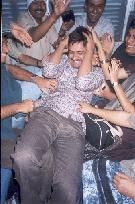
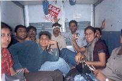
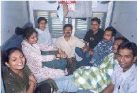
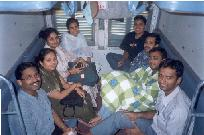

All images are protected by copyright. Consult the copyright page for more information. No images may be reproduced without the consent of the respective copyright holders unless mentioned otherwise.
In the last week of February this year, some of my colleagues and I visisted Rajasthan to attend another colleague's (let's call him Pankaj (because that's his name)) wedding. After the wedding, most peeps came back to Mumbai, but four of us guys stayed on to travel around this interesting state. Following will be a log of our travels. You can click on any of the images to get a larger version. If the large versions are still too small, I have huge versions too.
We were to meet at Bombay Central station at 6pm on the 21st. Most people came straight from work, but I chose to go home first. There were 16 of us in all, three of whom were to board at Borivali. I waited under the indicator for our coach, while, I presume, the others waited outside till everyone had arrived.
The train started on time - 6:50pm, but not before some entertainment. I'll let someone else describe that ....
  No one really knows when we reached Borivali - at least I don't. While half the lot were busy playing Ohno (some of you may know it as Uno or Ono), or eating (we're not quite sure which since we could only hear them), the rest of us were busy speaking in tongues (which is probably why we couldn't figure out what was going on next door). It was a weird little game. My initial intent was to learn Gujrati from Dharmesh by speaking, but it turned out that everyone wanted to learn a different language, so it turned into this bizzare exchange of Gujrati, Punjabi, Marathi, Malayalam, Hindi and French. In the end everyone learnt to say "100 haired moustache" - like that's gonna get us very far.
We spent the rest of the evening trying out various card games. We started with Rummy, but not everyone was interested. We then tried Go Fish, which was interesting, but people got fed up after the first game. After dinner we decided on bluff. We had three packs, and umm... 9 players, IIRC. Half the players didn't know how to play, so they wanted a trial game before we actually started. The trial game lasted about three hours. No one wanted to play another. We then switched to Judgement. After several rounds, and having passed through half of Gujarat, we decided to quit. It was 2am.
The group split here, with half going to bed, and the other half moving next door to play Uno. That lasted until 4:30, which is when everyone decided to sleep.
  Wake up was at 7:30 to the sound of, "CHAAAI.... GARAM CHAAAI.... SPECIAL MASALA GARAMA-GARAM CHAAAI". Ah, the pleasures of second class sleeper, Indian Railways.
The rest of the journey was quiet - if you consider the chai walla part of the background noise. We tried to play 20 questions, but got bored after Three. There were omlettes for breakfast - most of us had two each.
We passed through a bit of Madhya Pradesh, and then into Rajasthan. Some of us got off at Sawai Madhopur Junction, and took a walk. The train changed direction.
It was now quite bright outside, and the Rajasthani landscape is amazing, so we took some time off to look out. I decided to take a nap a little while later, and I'm told that two Rajasthani guys got in the train and started singing. I could hear them, but couldn't understand too much. They sang something for everyone in the train I think.
We finally reached Jaipur at around 1:30pm, and two of Pankaj's relatives took us to hotel kohinoor where we were to spend the next two nights...
{kind=link}
{kind=link}
{kind=link}
{kind=link}